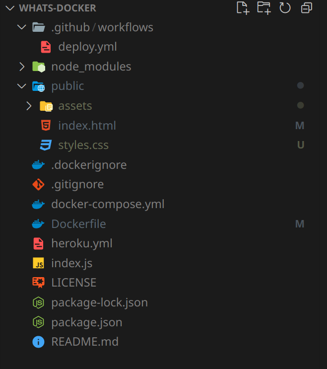

What's Docker?
How I used Docker to save my hands.
Backstory
So I've you're like me, you've been typing for a really long time.
The Implications Complications
- Weird typing style
- Not using all 5 fingers
- Using the wrong finger for certain keys
- Typing for hours without taking any breaks
- Repeating the same motions when programming
- Improper posture and position
- Typing while lying down
- Hunching over to type (laptops)
Who cares?
Why does this matter?
What does this cause?
Repetitive Strain Injury (RSI)
- A gradual buildup of damage to muscles, tendons, and nerves from repetitive motions (source)
- Recovery Treatment - ⏰💰
- Literal break in typing/movement
- Refactoring your work environment
- Braces or splints
- Physiotherapy + Exercise
- Surgery (worst case)
Okay? 🤷♀
What does this have to do with Docker?
Backstory Pt. 2
An attempt to tie this to Docker
These commands needed to be run simultaneously every time
Other frustrations
- Relatively old versions of software
- Ruby 2.5.3 (Latest 3.0.2)
- Rails 4.2.8 (Latest 6.1.4)
- Node 10.18.1 (Latest 16.6.1)
- Onboarding a new developer was slow
- Broke existing Node version
- Unable to use new Rails versions for other projects
- Have to install long list of dependencies that aren't used
Okay??? 🤷
SERIOUSLY WTF DOES THIS HAVE TO DO WITH DOCKER?
Docker in a nutshell
Because this is a presentation, not a bedtime story
What is a container?
https://www.docker.com/resources/what-container
- Just a running bundle of stuff, with a Great Wall of China surrounding it
- Everything needed to run an application
- Source Code + Environment
- Runs in isolation, away from your local environment
- Uses your host kernel to run, not its own virtual machine
- Can be orchestrated together
- Containers can network with each other
- Containers can depend on other containers
- Containers can share binaries

How do I make one?
Do I just put my laptop in a shipping container?
What is an image?
https://www.docker.com/resources/what-container
- A static package that creates or 'spins up' a container
- Everything needed to run a container
- Stored alongside containers (same level)
- Build-able from scratch or customize a pre-made image using Dockerfiles
- Images are shareable, containers are not
- Use container registries to push/pull app images (Heroku, DockerHub)

Too much talking 😴
JUST SHOW SOME CODE ALREADY
Docker in action
This presentation is actually running inside a container!
Example Docker structure
Dockerized & Overkill Express.js server

-
.github/workflows/deploy.yml - Build the image via Github Actions, then deploys to Heroku's Container Registry
-
.dockerignore - Files and directories that shouldn't be moved into the container
-
docker-compose.yml - Config to run shared containers and volumes
-
Dockerfile - Blueprint for building the image
-
heroku.yml - Config for Heroku to spin up a container
Example Dockerfile
- Each step creates a cacheable intermediate image
- Image needs to rebuild anytime a step changes
- bEsT pRaCtIcEs 👁👅👁
- Minimize the image size as much as possible
-
Always specify version numbers, avoid using
latesttags - Move frequently changing steps to the bottom of the file
-
Want to learn more?
https://docs.docker.com/get-started/
This seems cool
but how did this save my hands?
The impact of Docker
Solutions to the frustrations
- Onboarding a new developer is now stupid simple
- 1 command now:
docker-compose up - No need to install Ruby, Node, or any dependencies locally, just Docker
- No need to even build the image, just pull the latest from Heroku and spin up the container
- Able to create a E2E environment in a CI Pipeline, consistent to a developer's local machine
- Build times are reduced (locally & deployment)
- Will use the cached image steps when building
So, did Docker save my hands? 🤔
I'll let you be the judge of that
Fin.
GitHub: navn-r/whats-docker